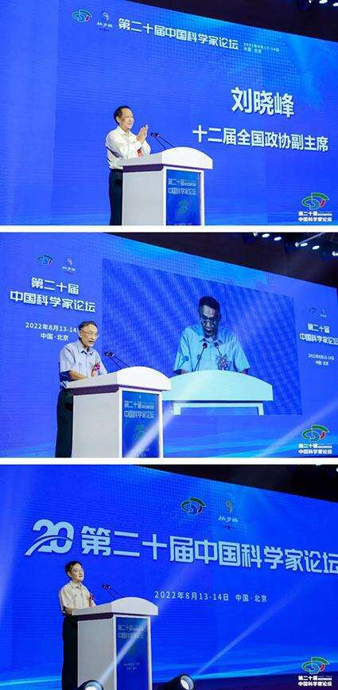
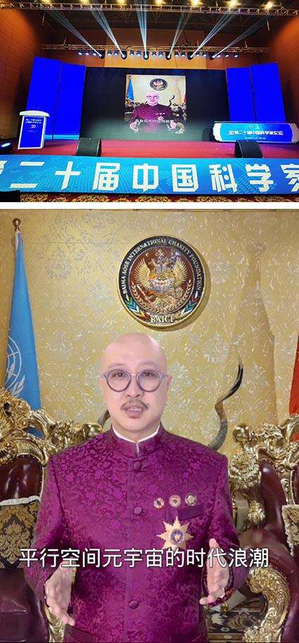
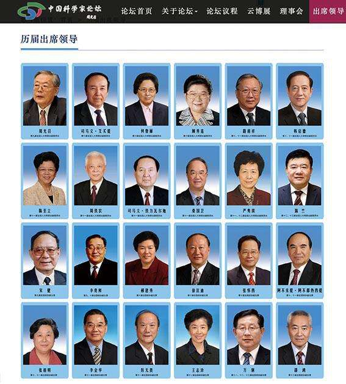

近日，第二十届中国科学家论坛以线上线下形式在北京举行，由第十二届全国政协副主席刘晓峰宣布开幕。联合国环境科政商论坛指导委员、水行动十年高级别会议国际指导委员拿督斯里吴罡豪教授作为中国科学家论坛主席团副主席兼大健康产业领域首席科学家作出以“元宇宙”为题的讲话。
该论坛以“科技创新赋能新时代高质量发展”为主题，围绕大气田海洋工程建设、健康建筑科技创新、先进煤电技术、智能无人系统、绿色环保、数字经济、生态文明、科技战略政策、医疗健康、中医药发展、智库赋能、双碳战略、专精特新、乡村振兴、科学家与企业家精神等领域进行了交流与探讨，取得了丰硕成果。
本届论坛得到了各级领导的关怀和支持，十一届全国人大常委会副委员长陈至立、十届全国政协副主席李蒙分别为本届论坛的召开发来贺信，会上，十二届全国政协人口资源环境委员会副主任齐让和国际欧亚科学院院士、科技部原秘书长张景安分别作为大会联合创始人宣读了贺信和致辞。

图1｜第十二届全国政协副主席刘晓峰宣布第二十届中国科学家论坛开幕
图2｜第十二届全国政协人口资源环境委员会副主任齐让作为第中国科学家论坛联合创始人宣读了贺信和致辞
图3｜国际欧亚科学院院士、科技部原秘书长张景安作为中国科学家论坛联合创始人宣读了贺信和致辞
拿督斯里吴罡豪：把握元宇宙科技发展新机遇
联合国环境科政商论坛指导委员、水行动十年高级别会议国际指导委员拿督斯里吴罡豪教授作为中国科学家论坛主席团副主席拿督斯里吴罡豪教授表示，科学发展是国家发展及软实力的重要指标之一，尤其在科创飞速发展的时代，我们不仅需要紧跟步伐更要开创先河。目前，全球科学技术研究很重要，我们更要把科研成果及专利设计应用在民生当中，提高工作效率、生产力、生活质量以及全球竞争力。
元宇宙对大多数人而言是概念阶段，但就虚拟世界对社会和经济发展和如何落地非常最关键，这也是引领全球发展的重要要素之一。
拿督斯里吴罡豪教授提到，会上演示了孪生虚拟人替代本人进行讲演，此应用不局限于地点服饰语言种类，可以大幅度减轻个人工作强度，通过把元宇宙范畴的多种技术、商业模式，虚拟与实体的结合尽快落地，让元宇宙的发展更倾向和符合我们的实施与发展。

图4｜拿督斯里吴罡豪教授作为中国科学家论坛主席团副主席兼大健康产业领域首席科学家通过数字孪生虚拟人作出以“元宇宙”为题的讲话
图5｜拿督斯里吴罡豪教授以孪生虚拟人替代本人进行讲演
联合国咨商组织-世贸联合基金总会已发起“平行空间元宇宙产业联盟”，亦通过与多国驻华机构的合作，推动该产业在全球发展。首个“平行空间·天空城”元宇宙产业基地占地2000亩，座落于2025年起实施零关税的海南自由贸易港，将联动世界各地参与平行空间元宇宙的民众进行虚拟与现实的平行互动，分享此项目的资源与服务，更通过我们在各国建立的平行空间天空城的联接，加强友好国家的金融、贸易、经济服务的合作。
拿督斯里吴罡豪教授表示，期待至今已有20年历史的中国科学家论坛，未来也实现在元宇宙举行，让世界各国的科学家们通过元宇宙的虚实体交换技术，让全球更多民众得益于此。
图6｜拿督斯里吴罡豪教授于第十三届中国科学家论坛接受中央电视台的采访
周守为、刘德培、尹伟伦、倪维斗、李永舫、侯立安、陈杰、吴以岭等8位两院院士分别作了题为《“深海一号”大气田海洋工程建设的创新实践》、《健康建筑科技创新和实践》、《关于森林碳汇、碳贸易及我国双碳战略的思考》、《创新驱动发展中国先进煤电技术》、《聚合物太阳电池光伏材料》、《新膜保障健康饮水的研究进展》、《智能无人系统的发展》、《络病研究与创新中药》的专题报告，50多位科技型企业家分别通过线上线下形式作了专题报告和科技创新经验分享，5万多位网民通过线上参与了本届会议活动。
据中国科学家论坛主席、中国管理科学研究院商学院院长、发现杂志社社长陈贵介绍，因严格执行北京市疫情防控要求，原定于5月召开的第二十届中国科学家论坛不得不延期2次召开。这期间，中国科学家论坛传递科学精神、推动科技创新的脚步并未停止。自5月起，中国科学家论坛先后组织了十余场云论坛和专题线上会议，200余位院士、专家、企业家线上论道科技创新，很好地发挥了交流合作平台作用。
中国科学家论坛主席、中国管理科学研究院商学院院长、发现杂志社社长陈贵
中国工程院院士、中国工程院原副院长杜祥琬，中国工程院院士、中国工程院原副院长、全军消化病研究所所长樊代明，中国工程院院士、中国环境科学研究院国家重点实验室主任吴丰昌，中国科学院院士、中国科学院化学研究所研究员韩布兴，中国工程院院士、火箭军后勤科学技术研究所所长侯立安，解放军总医院第二医学中心中医科主任、中央及中央军委保健会诊专家仝战旗等院士专家在云论坛上分别围绕《世界科技强国的四个标志》、《从医学知识到医学知识论》、《双碳目标下的绿色发展初步思考》、《绿色化学与可持续发展》、《双碳目标下的膜法水处理技术应用与展望》、《溃疡性结肠炎中药新药的研制与临床应用体会》等主题题目进行了报告和研讨。中国科学家论坛系列云论坛的举办点燃了科技创新的思维热情和动能引擎。

中国科学家论坛
中国科学家论坛是在著名科学家、时任全国人大常委会副委员长、中国科协主席周光召院士特别关怀和支持下，于2002年创办，迄今已成功举办了十九届。二十年来，中国科学家论坛得到了科技部、中国科学院、中国工程院、中国科协、国家自然科学基金会、清华大学、北京大学等以及社会各界的大力支持，周光召、司马义艾买提、何鲁丽、陈至立、周铁农、厉无畏、万纲、邵鸿等历届二十多位国家领导人出席论坛，已成为官产学研参与度高、覆盖面广、社会影响力大的全国性科技品牌活动,成为推动我国科技事业发展的标志性活动和重要平台。以深度的热点解析探讨、高瞻的科技前沿趋势剖析、广度的各领域科技创新融合发展模式探索为我国科学技术创新、社会经济发展以及企业创新主体发展作出了巨大贡献。

中国科学家论坛历届出席领导
今年是中国科学家论坛创办20周年。陈贵提到，在这20年间，我国科技创新取得了日新月异的历史性成就，对中国科学家论坛能在国家科技事业发展过程中发挥出平台独特的作用感到非常欣慰。未来20年，中国科学家论坛将不忘初心，牢记使命，坚持传播科学思想，弘扬科学精神，为我国科技事业发展和产学研协同发展格局做出新的更大的贡献。